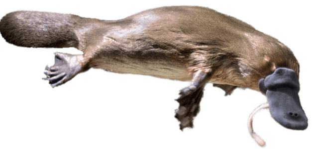

Ornithorhynchus anatinus
Es una especie de mamífero semiacuático endémico del este de Australia y de la isla de Tasmania. Es una de las cinco especies, junto con las cuatro de equidna, que perviven en la actualidad del orden de los monotremas, grupo que reúne a los únicos mamíferos actuales que ponen huevos en lugar de dar a luz crías vivas. Es el único representante vivo de la familia Ornithorhynchidae y del género Ornithorhynchus.

La inusual apariencia de este mamífero: ponedor de huevos, venenoso, con hocico en forma de pico de pato, cola de castor y patas de nutria— desconcertó a los naturalistas europeos cuando se lo encontraron por primera vez, llegando incluso a ser considerado por algunos como una elaborada falsificación. Es uno de los pocos mamíferos venenosos existentes; los machos tienen un espolón en las patas posteriores que libera un veneno capaz de producir un dolor intenso a los humanos. Sus características únicas lo convierten en un importante sujeto de estudio en el campo de la biología evolutiva, así como en un símbolo reconocible e icónico de Australia; ha aparecido como mascota en acontecimientos nacionales y aparece al dorso de la moneda australiana de 20 centavos. Es el emblema animal del estado de Nueva Gales del Sur
Aprende más sobre este animal en: